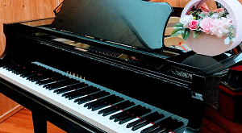

仙川ピアノ教室リーフは、調布市 仙川駅から徒歩5分の個人レッスンのピアノ教室です。 生徒様ひとり一人の個性やレベルに合わせて、楽しく丁寧な指導を心がけておりますので、３才からの小さなお子様や初心者の方も安心です。 まずは体験レッスンから、お気軽にお申込みください。 オンラインレッスンも行っおります。
当教室の講師は桐朋学園大学ピアノ科を卒業し、同大学研究科を修了しております。 ピアノの他、ソルフェージュ、楽典、音大受験対策など、ニーズに合わせて全力でサポートさせて頂きます。
体験レッスン、オンラインレッスンもご利用いただけます。 下記ボタンから、お気軽にお申込み、お問い合わせ下さい。

所在地は、調布市 仙川です。京王線 仙川駅から徒歩5分、桐朋学園の近くです。 ▽小田急バスの場合は、仙川駅入口バス停から徒歩3分です。 ▽お車の場合は、近くにコインパーキングが有ります。 ▽京王線千歳烏山駅からは徒歩20分。 ▽京王線つつじが丘駅からは徒歩15分です。
教室またはオンラインにて30分間のレッスンをご体験いただけます。
体験レッスン料として￥1000頂いております。（入会された場合は返金させて頂きます）
無料です。
[オンライン月3回]
30分￥5000/月
（30分コースのみ）
[月3回レッスン] [月謝制]
30分 ￥8000/月
45分 ￥10000/月
60分 ￥12000/月
※ ご希望に応じて月4回も可能です。
他に、ワンレッスン (月1回～) なども可能です。
[ワンレッスン]
45分 ￥4000/回
60分 ￥5000/回
*初級→中級→上級とレベルアップしても料金は時間制ですので、変わりません。
開講日
(月) 14:00～20:00
(火) 14:00～20:00
(土) 16:00～20:00
(日) 16:00～20:00
*空き時間については、お問い合わせ下さい。
学校行事や急病などで、やむを得ずレッスンをお休みされる場合は、別日や他の月などに、振替えてご対応致します。
クラシック、ポピュラーが可能です。
ソルフェージュ、楽典、音大受験対策も行っています。
ヤマハグランドピアノＣ３使用。
グランドピアノならではの本物のタッチや音色を体感することで、創造性や感性を豊かにします。
初心者の方、趣味で楽しみたい方、本格的に学びたい方、それぞれの目的、ご要望にお応えできるよう、分かりやすく、丁寧にレッスンを進めてまいります。
ピアノを通じて、心豊かな感性、自立心を育てるお手伝いが出来れば幸いです。
オンラインレッスンでは、自分で注意点を書き込んだり、画面越しに、しっかり言葉を聞き取るなど、より集中力も高まっているように感じます。遠方の方でも、お気軽にお問い合わせ下さい。
永翁亜貴（ながおさ あき）
桐朋学園大学音楽学部音楽学科ピアノ専攻卒業。
同大学研究科修了。
研究科在籍中、ドイツにてマスタークラス受講。
九州音楽コンクール最優秀賞など受賞歴多数。
演奏活動を行いながら、指導も精力的に行っています。
高等学校教諭第１種免許取得。
ピアノ講師経験は、5年以上です。
お子様から大人の方まで幅広く指導しています。
*当教室ではオンラインレッスンを始めています。遠方の方や通う時間がない方などにも始めやすく、スマホ又はパソコンでレッスンを受けて頂くことが出来ます。